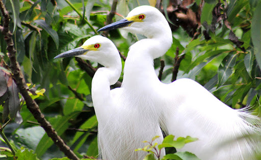
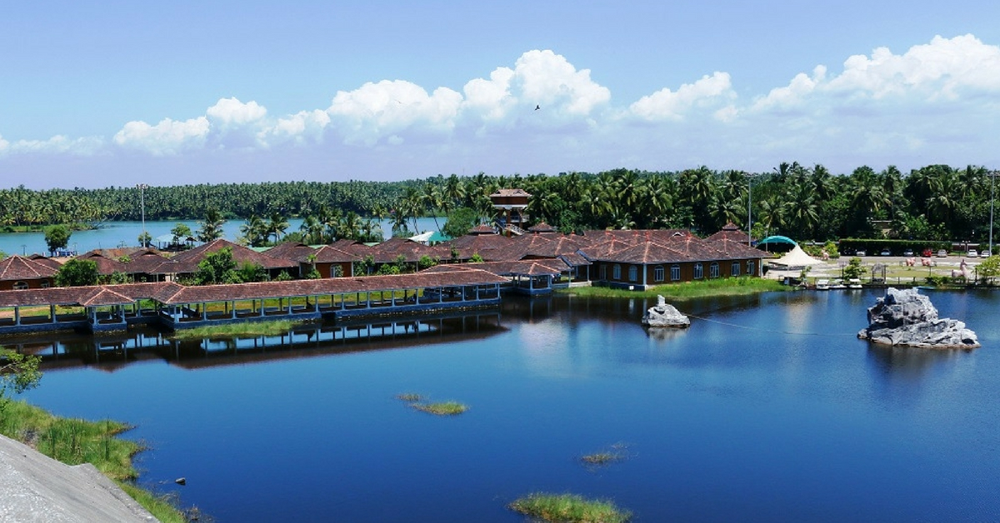
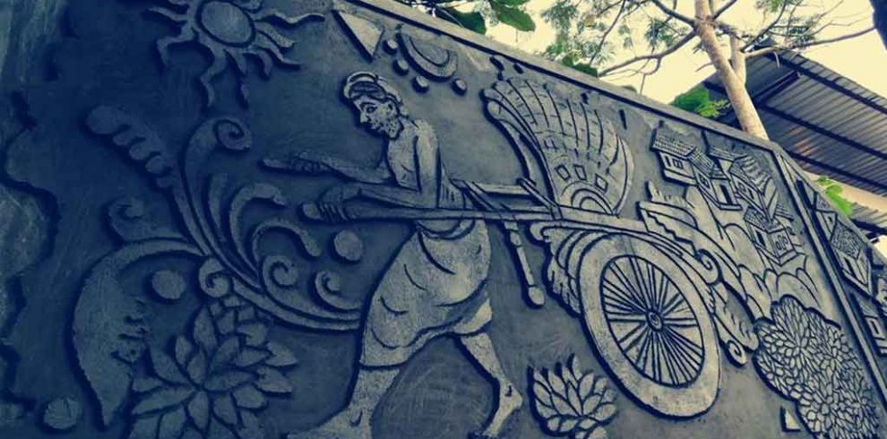
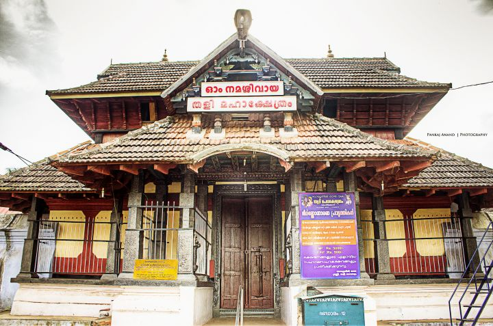
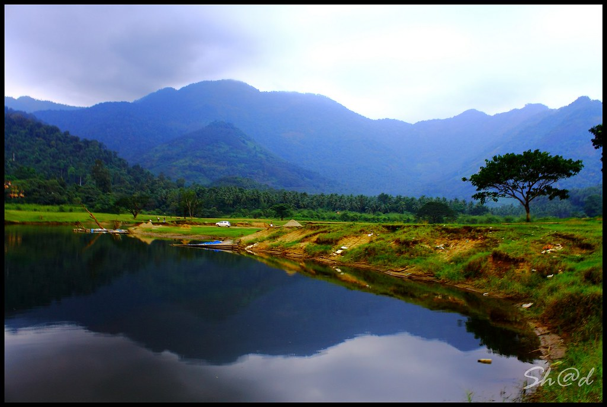

KOZHIKODE BEACH
Kozhikode Beach or Calicut Beach is a beach on the western side of Kozhikode, situated on the Malabar Coast of India. The beach is accessible through four road overbridges in the city. The beach has paved stones and illumination. There is one Lions Park for the children and an aquarium. Kozhikode beach has always been a prominent place for conducting public meetings. The beach road was renamed 'Gandhi Road' in 1934 after Gandhi visited Calicut in 1934.

BIRD SANCTUARY, KADALUNDI
The Kadalundi Bird Sanctuary lies in the Malappuram, Kozhikode districts of the state of Kerala in India. It spreads over a cluster of islands where the Kadalundipuzha River flows into the Arabian Sea. The Sanctuary hill is around 200 m above sea level. It is 29 km from Tirur, 39 km from Malappuram and 19 km from Kozhikode city centre. The nearest airport is Calicut International Airport, Malappuram.

ART & CRAFT VILLAGE
Sargaalaya is an Arts & Crafts Village established by the Kerala tourism department. It is located just off the main Kozhikode Kannur National Highway in Iringal in a 20 acre area. We visited this village during our recent trip to Kerala while driving from Kozhikode to Kannur. The complete complex is built using laterite rock which gives it a unique look. It has a huge number of stalls selling various ethnic crafts and it also houses the Crafts Design and Technology Development Centre, which provides training for craftsmen to learn new techniques in traditional handicrafts.

SM STREET{Mittai Theruvu}
This place is known as Mittai Theruvu or SM Street is one of the most popular and historic trade centers in calicut. This is one of the most busiest streets and Shopping spots in Calicut. The area will be crowded always, especially in the evenings. There are many Famous Bakeries Situated in this street. Earlier this street was famous for Kozhikkodan Halwa or Sweet Meat (In English). Now a days, one can buy anything and everything including foot wears, apparels, food items etc.. This is a well known shopping centre for both local and foreign items

TALI TEMPLE
One of the very ancient siva temple. Very nice temple architecture and divine moolasthan of Lord Siva. You can see wonderful wooden sculpture before entering the main deity. You can have very nice and peaceful darshan of siva, parvathy, narasimha and krishna sannadhis. I am impressed and loved to visit again and I am sure you too like me. Don't miss it.
